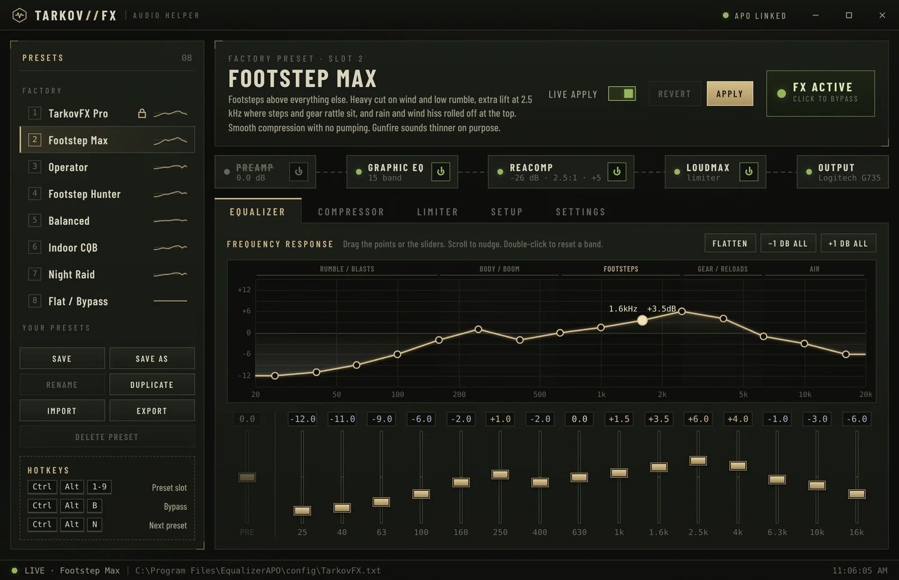
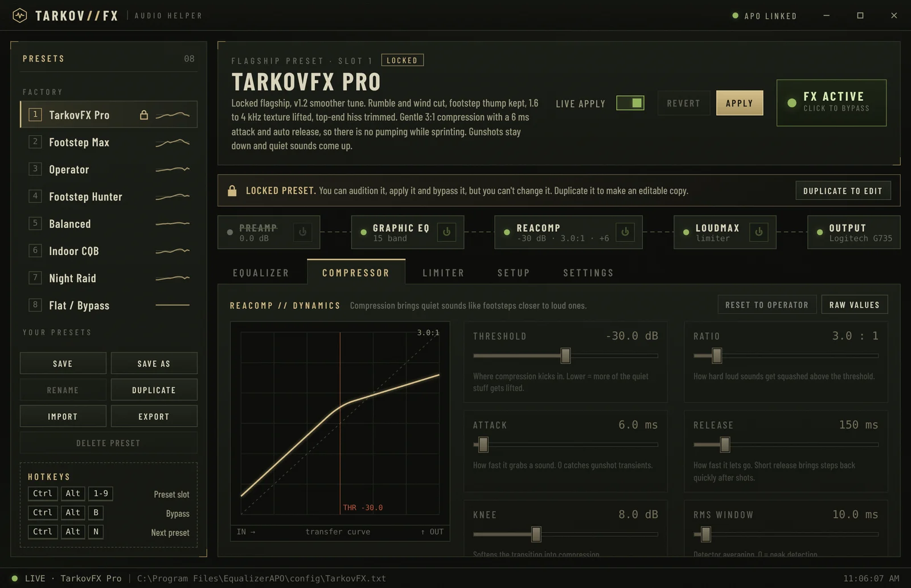
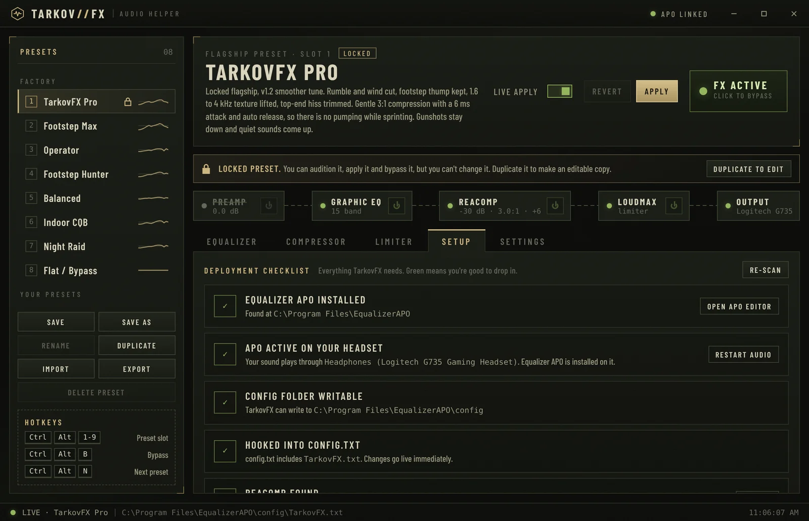
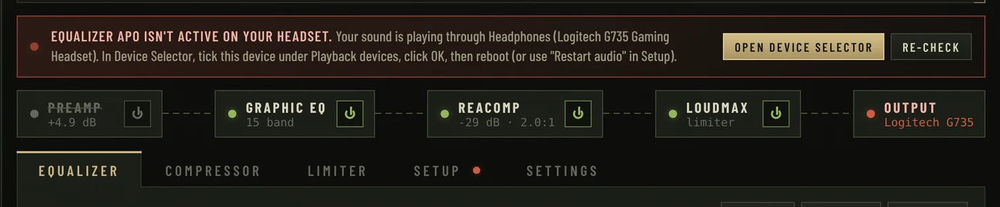

TarkovFX is an audio helper for Escape from Tarkov. It pushes footsteps forward, holds gunfire down and cuts the wind, all from one app, with presets you can switch mid-raid.
Unzip and run TarkovFX.exe. Needs Equalizer APO and two free plugins (setup takes about 5 minutes).

Everything a Tarkov audio setup needs, in one place instead of three config editors.
A 15-band graphic EQ with zones labelled for Tarkov: rumble, body, footsteps, gear, air. Drag the curve or the sliders.
ReaComp compression squashes loud transients while make-up gain lifts the quiet stuff. LoudMax catches what's left.
Footstep Max cuts sub-bass wind and rolls off rain hiss, so the sounds that get you killed stand out.
Ctrl+Alt+1–9 jumps between presets, Ctrl+Alt+B bypasses everything. No alt-tabbing out of a fight.
Finds Equalizer APO and your plugins, fixes permissions, and warns you if APO isn't actually running on your headset.
Save, duplicate, import and export presets. Even plain Equalizer APO configs import straight in.
TarkovFX drives Equalizer APO, which processes all of Windows' audio before it reaches your headset. It doesn't touch the game.
Game audio out
Cut rumble, lift footsteps
Squash gunshots
Lift quiet sounds
Hard ceiling on peaks
You hear them first
Start from a factory preset, tweak it, save your own. Click one to see its EQ curve.



TarkovFX uses free tools you install once. Their licences don't allow bundling, so grab them from the official sites.
Global hotkeys work while Tarkov is focused. Remap them in Settings, and close the window to keep TarkovFX in your tray.
No. TarkovFX never reads or changes Tarkov's files or memory. It only writes a config file for Equalizer APO, which processes Windows' audio output, the same way any system-wide EQ works.
Yes. TarkovFX, Equalizer APO, ReaPlugs and LoudMax are all free.
ReaPlugs and LoudMax are free, but their licences don't allow redistribution. The Setup tab links to the official downloads and finds the files automatically once they're installed.
TarkovFX isn't code-signed yet, so SmartScreen may warn on first launch. Click More info → Run anyway. The full source code is on GitHub.
Equalizer APO is probably not installed on the device you're listening through, for example after a headset swap, switching USB and Bluetooth, or a driver update. TarkovFX shows a red banner when this happens: click Open Device Selector, tick the device it names, then reboot.
Start with TarkovFX Pro for an all-round competitive sound, or Footstep Max if footsteps are all you care about. Headsets differ, so tweak a band or two and save your own.
Download TarkovFX and hear the difference in your next raid.